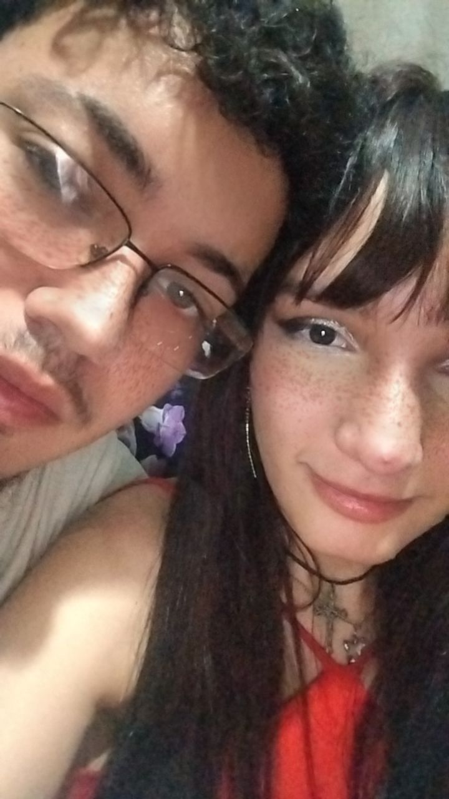
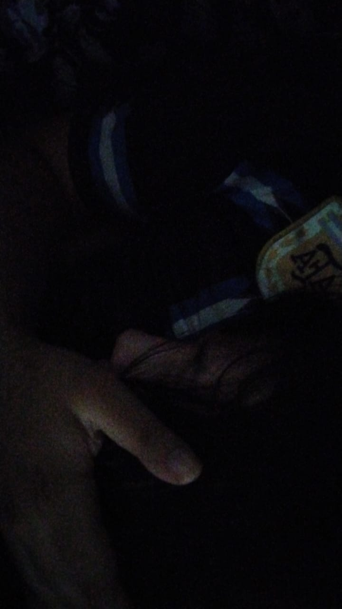
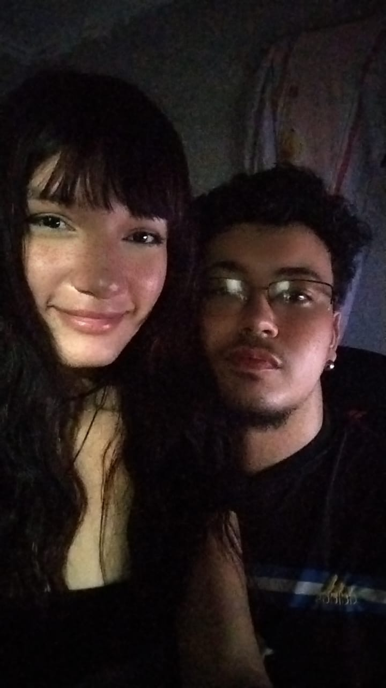
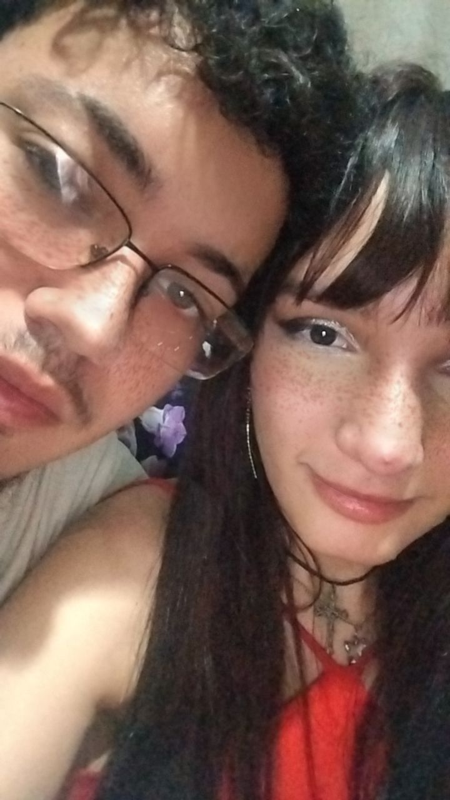
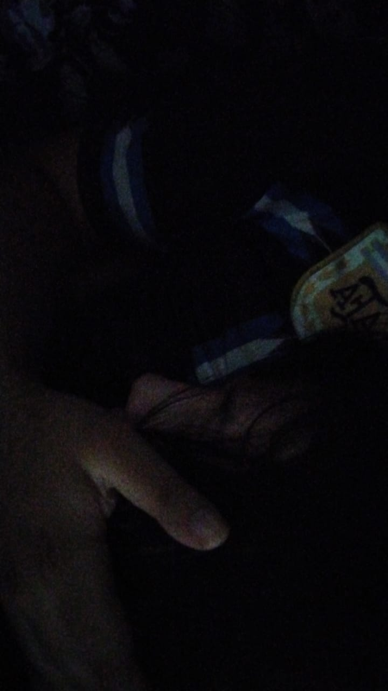
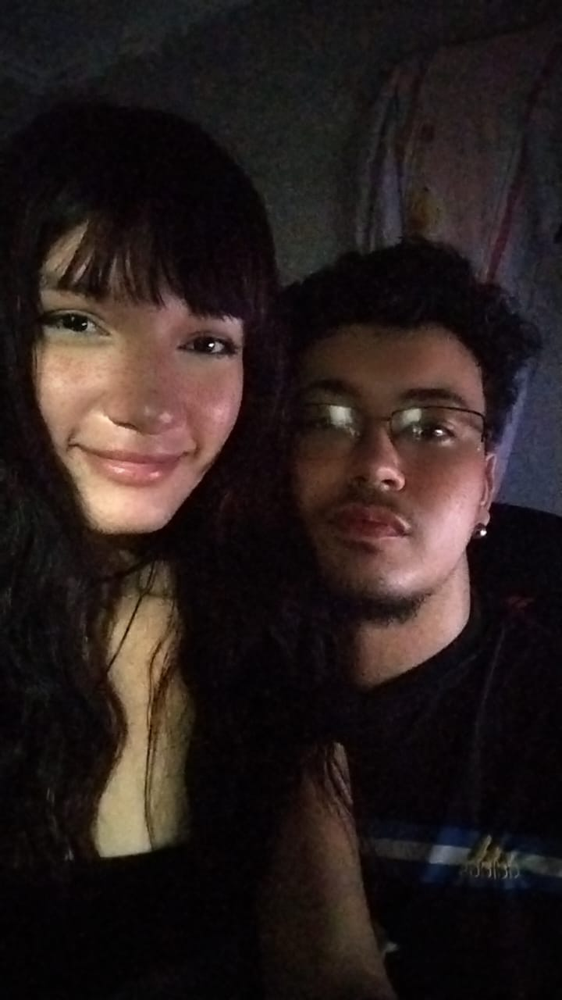

Para: Lelly
EU TE AMO, MEU AMOR

Foi incrível como tudo começou e onde chegamos. Cada momento ao seu lado tem sido uma mistura de descobertas e alegrias que só fortalecem o que eu sinto por você. Desde as primeiras conversas você trouxe um brilho único e inexplicável para a minha vida, eu tenho muito orgulho da mulher que você é e vem se tornando cada dia mais.
Estamos juntos há:
E durante todo esse tempo, você deve saber o quanto eu sou apaixonado e louco por você, o quanto eu amo cada detalhe seu e deixo claro o quanto sou seu fã número 1.
Nunca imaginei que a pessoa na qual eu sonhava ter, seria minha namorada. Nunca achei que as nossas conversas sobre FREE FIRE iriam fazer a gente chegar onde estamos. Só reforça a ideia de que você é exatamente quem eu quero pra minha vida!
Tudo aconteceu bem rápido, mas de uma maneira boa. Nós fomos "emocionados" e fomos de conversante à namorados, entretanto, essa foi a minha melhor escolha. Você é minha melhor escolha da vida. Eu quero ser seu para o resto de nossas vidas. Eu quero casar com você, construir uma família e estar contigo em todas as conquistas, quero ser seu guarda-costas e seu porto seguro. Ser o homem que você vai vir para os meus braços quando estiver triste, ser aquele que você vai correr quando tudo estiver dando errado e eu vou te dar a certeza de que tudo ficará bem. Eu quero ser o SEU HOMEM para o resto das nossas vidas. Você me inspirou a fazer acontecer desde o começo, sempre me deixando à vontade em tudo. Criamos uma intimidade tão massa que me fez muito feliz, porque posso ser exatamente quem eu sou, sem precisar fingir ou tentar ser alguém diferente apenas para te agradar. E eu acredito que você também, você sendo você é uma das suas melhores qualidades, falando em qualidade, você é tão linda, maravilhosa e incrível, que eu passaria dias digitando nesse código e ainda assim não conseguiria explicar o quanto incrivel você é. VOCÊ É MINHA NAMORADA HAHAHAHA
Amo cada detalhe seu

Eu percebi que te amava quando meu dia só ficava feliz quando conversava com você, percebi que te amava que a cada "oi" seu, meu olho brilhava e o sorriso bobo se instalava, mesmo que ainda virtualmente. Eu percebi que te amava quando eu pedi a Deus que você fosse minha, pois você era e é tudo o que eu sonhava, você é meu sonho na realidade, como eu já disse várias vezes. EU PERCEBI QUE TE AMAVA QUANDO EU CHOREI IGUAL UMA CRIANÇA NA SUA FRENTE COM MEDO DE TE PERDER, PQ VOCÊ É O AMOR DA MINHA VIDA E A MINHA MULHER PARA O RESTO DAS NOSSAS VIDAS!!!!
Mas eu me lembro perfeitamente de como passei dias pensando se já era o momento certo de dizer que te amo. E na primeira vez que falei e você falou que também amava, eu me senti o homem mais feliz do mundo: a mulher que eu sonhei em ser minha estava me dizendo que me amava. TIPO, COMO??????
Desde então, só tenho uma coisa a dizer: eu te amo mais do que ontem e menos do que amanhã. Ainda são poucos os momentos registrados, porque, sinceramente, geralmente nós vivemos mais do que registramos. Nós raramente pegamos no celular quando estamos juntos, prefiro saborear o quão incrível é a sua presença comigo, isso que me faz ser o homem mais feliz do mundo. Mas o que eu realmente quero é ter tantos momentos ao seu lado que nossa galeria esteja cheia deles, quero ser parte da sua vida e o cara com quem você pode contar a todo momento. E detalhe, o homem com quem você vai casar, ter filhos e dividir a vida até depois da morte.
Nossos momentos

 






Quero desejar para a gente tudo de bom e relembrar que tudo aconteceu em 3 meses, foi bem rápido. Para mim estamos juntos há anos, eu te amo muito.
Estamos juntos há 3 meses, faz três meses que te pedi em namoro, e posso contar um segredo? Não existe homem mais feliz que eu nesse mundo depois desse acontecimento. Você me faz ser melhor, você me faz ser um homem louco por você e com vontade de viver (algo que eu não tinha vontade antes) a vida toda ao seu lado. Vou deixar a contagem para que a gente volte aqui dnv futuramente e veja quanto tempo certinho ja estamos namorando.